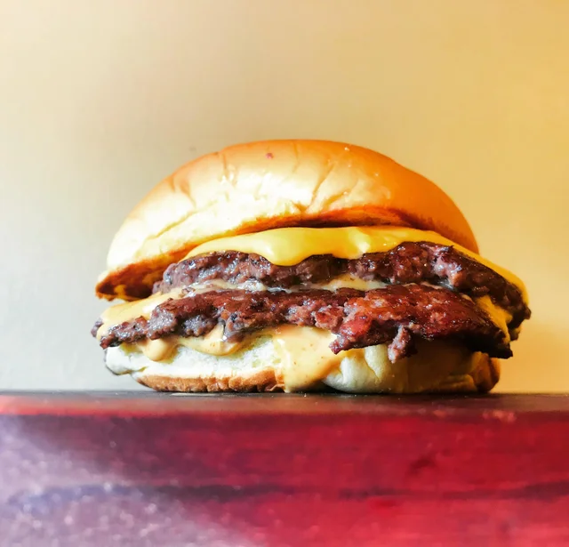

Smashed Burgers

Description
Smashed Burgers maximize the Maillard reaction to make for the best-tasting burger.
Ingredients
- Martin's potato roll
- American cheese
- Ground beef 80/20
Steps:
- Form 2oz balls with ground beef.
- Place ball of meet onto griddle and smash down with spatula/smasher.
- Salt and pepper the patty and cook until browning starts to occur on the top side, approx 60-90 seconds.
- Finish the damn thing.